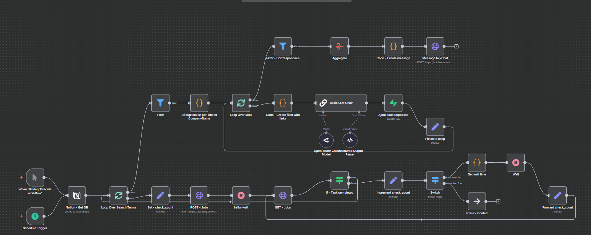

Automatisation de la veille des offres d'emploi


Présentation du projet
L’objectif de ce projet est d’automatiser une veille personnalisée des offres d’emploi, enrichie d’analyses IA. Chaque offre est résumée sur les outils demandés, les tâches principales, le salaire éventuel et les avantages sociaux. Une intelligence artificielle attribue également un score de pertinence de 0 à 100 en fonction de mon profil et de mes critères de recherche.
Stack technique et fonctionnement
Première version
- n8n : Automatisation des appels API, nettoyage et préparation des données par IA
- API APIFY (Google Jobs) : Scraping des offres selon critères prédéfinis
- Notion : Interface simple pour gérer les mots-clés de recherche et leur activation
- Supabase : Base SQL pour stocker et historiser les offres collectées
- OpenAI GPT4.1-mini via Openrouter : Traitement IA pour résumé et scoring
- KChat (Slack d’Infomaniak) : Envoi quotidien de résumés des offres pertinentes avec score
- Flutterflow : Application no-code affichant les offres d’eemploi et les détails pertinents
Seconde version
Suite à l’arrêt de l’API APIFY, le scraping a été repris via un script Python utilisant la bibliothèque JobSpy, capable de collecter des offres sur LinkedIn, Indeed et autres plateformes.
Ce script a été transformé en API grâce à l’IA (modèle DEVSTRAL de Mistral) via Flask, et packagé en image Docker automatisée via GitHub Actions (Voir le projet sur Github).
Quelques ajustements ont été nécessaires dans n8n pour intégrer ce nouveau flux et retrouver une veille opérationnelle.

Améliorations possibles
- Raffiner le prompt IA pour un scoring encore plus précis et pertinent
- Ajouter des filtres dynamiques dans l’application Flutterflow pour affiner les recherches
- Étendre les sources de scraping à d’autres plateformes
- Intégration d’alertes personnalisées basées sur le score